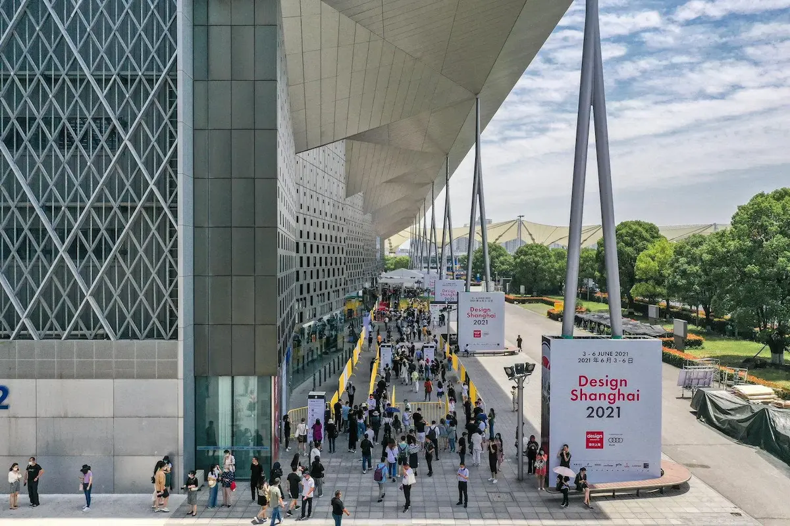

北京站未安排直播，采用专线技术方案，赛事期间未发生故障。该结果证明专线方案可作为可靠方法参考，但不应被描述为发生过直播或链路故障。
上海站概念方案 V2 · 主动风险检查增强版
SHANGHAIBUSINESS READY众安保险 HYROX 上海站网络保障合作企划
以锐捷为主要网络产品体系，由航天信息围绕上海世博展览馆 3 号馆，把“网络可达”升级为对注册、计时、大屏、直播、媒体交付和赛事运营的业务可用性保障。
EventZhongAn HYROX Shanghai
Date2026.10.31 — 11.01
Venue上海世博展览馆 3 号馆
Positioning先验证资源，再承诺业务可用
赛事图片来源：HYROX 官方上海站页面
上海站已核实基线
上海版第一原则：先确认业务、场馆和运营商资源，再把服务能力写入基线；北京经验只复用方法，不复用数字。
网上调研 + 用户材料
赛事日期、地点和 3 号馆公开工程条件已经核验。人员、注册工位、终端并发、链路和临电仍需在业务基线、现场勘察和端到端联调中确认；直播按上海规划假设先行纳入设计。
设计原则：注册、计时和大屏优先形成境内本地闭环；网络健康必须和真实 API、推流、成绩同步与大屏刷新状态一起判断。
上海站先按“有直播”设计和规划，预留独立制作网络、国内多运营商上行、最低带宽、主备推流与真实码流监测；平台、时长和码率仍需制作方确认。
两日正赛启动
2026.10.31—11.01，最终运行窗口以联合排期为准。
HYROX 官方赛事页3 号馆
上海世博展览馆，南门地址为国展路 1099 号。
赛事与场馆官网平方米展厅
会展空间；赛道与功能分区以最终图纸为准。
场馆官网技术页公开净高
9 根柱、18 米柱距，搭建后需再次进行 RF 复测。
场馆官网技术页HYROX 标准赛制
8 段 1 公里跑与 8 个功能训练站交替完成。
HYROX 官方赛制规模与流量模型
人员、台位、直播、终端和峰值并发均待书面确认。
上海站专项基线Confirmed symptoms → Hypotheses → Verification
六类关键风险，
不把北京数字写成上海结论
以下是上海站必须验证的业务风险模型，不代表北京站或上海站已经发生问题。北京站无直播、采用专线且未发生故障；上海站则先按有直播规划。点击卡片可跳转至动态拓扑，查看对应设计场景。
P0 · 国际协同01
Sports Pro 与海外协同边界尚未冻结
系统部署地域、接口、性能阈值和离线能力仍待系统方书面确认；普通网页可达不能代表真实业务可用。
业务影响
注册、成绩同步或总部协同在关键时刻不可用。
待验证事项
接口依赖、合规路径、端到端响应、本地缓存与补传机制。
境内关键业务闭环 + 合规跨境服务 + 真实 API 探测 + 可演练的降级流程。
P0 · 计时与大屏02
成绩采集到现场显示需要分段可观测
计时系统、后台、接口和大屏来自不同责任方，任何一段异常都可能表现为“屏幕不刷新”。
业务影响
成绩展示延迟，影响运动员、观众体验与赛事专业形象。
待验证事项
接口、刷新机制、离线显示、补传对账和各方责任边界。
把“采集→后台→API→大屏”作为完整业务链监控，并验证断网降级。
P0 · 直播制作03
直播平台、时长和码率尚待制作方确认
只有冻结节目单、平台清单、主备推流和目标码率，才能计算真实上行与冗余能力。
业务影响
推流卡顿或中断会同时影响线上体验、品牌曝光和内容交付。
待验证事项
场馆上行、物理路由、制作网络、CDN 边界与国际媒体需求。
有线主用、异运营商备份、直播独立策略、最低上行保障与真实推流监测。
P1 · 媒体生产04
大文件并发上传可能挤占关键上行
媒体工位、交付时限和素材规模尚未冻结；公共出口若缺少调度，突发上传会影响其他业务。
业务影响
素材不能及时交付，直播、办公或其他团队的可用带宽下降。
待验证事项
媒体数量、并发模型、平台目的地、现场存储和交付窗口。
媒体生产独立分区、每终端 / 应用上限、最低保障和本地暂存。
P0 · 运动员注册05
注册工位数量未定，连续性指标不能缺位
注册工位、扫码绑定流程和终端清单仍待确认；单台流量不大，但集中中断会迅速形成现场排队。
业务影响
注册效率下降、排队扩大，进而影响分组与现场运行节奏。
待验证事项
接口响应、会话连续、本地缓存、离线登记和恢复后补传。
注册独立 SSID / VLAN、高优先级、最低保障与真实扫码绑定演练。
P1 · 高密无线06
17,000 平方米会展空间会在搭建后改变 RF 环境
9 根立柱、临时构筑物、人群与金属设备会改变覆盖、反射和干扰；空场结果不能代表赛事高峰。
业务影响
高峰信号下降、重传增加、漫游失败，移动终端体验失控。
待验证事项
观众密度、频谱、AP 位置、安装审批、信道复用与蜂窝应急能力。
执行空场勘察、搭建后复测和高峰压测，再冻结 AP 数量、位置、功率与信道。
北京事实与上海边界：北京站未安排直播，采用专线技术且未发生故障；北京站人员、注册台和工作人员规模仍不构成上海容量依据。上海先按有直播设计，最终平台、时长、码率、主备推流及上行容量必须通过业务清单、资源核查、真实推流压测和端到端联调冻结。
P0 business chain
大屏不刷新时，
必须回答“故障到底在哪一段”
仅检查 IP、网页和某一时刻的丢包无法证明大屏业务健康。需要同时观察数据采集、业务后台、接口调用和现场刷新。
芯片 / 计时采集
检测事件是否生成、时间戳是否正常。
后台数据处理
确认记录是否落库、处理队列是否阻塞。
业务接口
持续观测响应时间、成功率和错误类型。
现场大屏应用
确认订阅、拉取、刷新与最终显示状态。
网络指标
时延、丢包、抖动、路径
时延、丢包、抖动、路径
应用指标
API 成功率、响应、错误码
API 成功率、响应、错误码
业务指标
芯片事件与大屏刷新对应关系
芯片事件与大屏刷新对应关系
处置指标
发现、定位、切换、恢复时间
发现、定位、切换、恢复时间
Application-aware dynamic topology
动态拓扑：网络状态与真实业务健康同时可见
切换八种设计场景，查看法兰克福业务协同、上海直播出口、备份路径、锐捷承载与网络健康运营平台如何协同判断和恢复；后续主动检查模块将进一步演示连续探测与策略切换。
HYROX 上海赛事网络健康架构 · 逻辑演示策略与业务探针运行中
Proactive risk inspection · Shanghai to Frankfurt
不等用户报障，
让主动探测与策略切换提前介入
探测机分别绑定主路 P、备用 A 与备用 B，持续验证 TCP / TLS、链路质量及获授权的只读业务结果。只有持续异常成立、候选备路连续健康且容量合格时，才允许新连接切换；切换后继续复核业务，不把“路由下发”误当成“业务恢复”。
01 · 主动探测主路与空闲备路同步检查，不等终端用户报障。
02 · 连续确认单轮波动不切换，连续越阈后才进入评估。
03 · 备路准入连通、业务结果与承载余量三项同时合格。
04 · 防抖与回切设置冷却与更长恢复窗口，默认恢复不抢占。
05 · 共同异常冻结三路同时业务异常或探针失联时告警，不盲切。
重要说明：下方全部指标与时序均为交互模拟，不访问德国服务器、不扫描端口、不修改真实网络。示例阈值包括 RTT 450 ms、抖动 40 ms、丢包 2%、HTTPS P95 800 ms、业务成功率 98% 和备路负载 75%；正式值必须依据上海现场基线、业务容忍度、设备能力与系统方授权重新校准。
网页内为核心控制台；完整独立页同时保留方案逻辑、实施边界、技术参考和日志导出。打开完整主动风险检查演示
From one Wi-Fi to application policy
不是让所有终端抢同一份带宽，
而是让每类业务拥有自己的策略
各部门业务重要性、访问方向和故障后果完全不同。以下策略方向需在上海站需求基线中与各业务负责人确认。
P0 · OVERSEAS APPLICATION
Sports Pro / 国际协同
在系统部署地域与接口确认后，保障真实业务连续响应，而不是只验证普通网页可达。
P0 · TIMING & DISPLAY
芯片 / 后台 / API / 大屏
把四段作为完整业务链监控，避免软件与网络之间长期无法闭环。
P0 · LIVE
多平台直播（上海规划假设）
北京站未安排直播；上海先按有直播规划，使用有线优先与独立策略，避免媒体、办公和普通终端挤占上行。
P1 · MEDIA PRODUCTION
图片 / 视频上传
解决大文件并发上传导致其他团队不可用的问题。
P1 · OPERATIONS
赛事办公
角色化接入、合理限速，与生产和 P0 业务逻辑隔离。
P1 · COMMERCIAL
Merch / 赞助商
高密无线、支付优先和不同合作伙伴之间的安全隔离。
Six-layer assurance system
两项重点改造，升级为六层业务保障体系
L1
RF 与物理层
围绕 3 号馆执行空场勘察、搭建后复测和高峰压测；关键终端、AP 回传与大屏采用有线优先。
先消除物理不确定性L2
多路径出口层
合规跨境服务、异运营商有线出口与经实测的应急路径协同，并核验真实故障域。
面向国内与海外目的地L3
应用策略层
按注册、计时、大屏、直播、媒体、办公、POS / IoT 与观众接入制定隔离、路由和 QoS。
业务不再相互挤占L4
业务可观测层
同时观察 API、推流、大屏刷新、链路、设备、AP 与终端体验。
从“能通”升级为“能用”L5
冗余与主动恢复
核心、出口和关键链路消除单点；以持续探测、连续阈值、备路准入、切换冷却和业务复核驱动恢复。
缩短人工判断时间L6
标准化交付层
沉淀配置基线、测试用例、赛时 Runbook 和健康报告。
服务中国区赛事复制Primary product ecosystem
主要网络产品体系：锐捷
锐捷承担出口、核心、接入、无线控制与网络管理。具体型号和数量在 3 号馆受控图纸、双轮 RF 实测、终端清单及运营商资源确认后确定。
出口与安全网关 / 防火墙 / QoS
核心承载双核心 / 业务分区
接入供电PoE 接入交换
无线控制射频与漫游管理
高密覆盖场景化无线 AP
体验管理设备 / AP / 终端可视
China event network standard
从上海一站，验证并迭代中国区赛事网络标准
采用“标准架构 + 单站适配 + 赛后迭代”的长期合作模型。
标准化的 6 项核心资产
上海站验证后的能力进入可复制项目资产，并以每站复测结果持续更新。
1
标准网络架构与业务分区
2
SSID / VLAN / QoS / 路由策略模板
3
真实业务探针与告警阈值
4
压力测试、故障演练与验收用例
5
现场 Runbook、RACI 与升级路径
6
赛事网络健康报告与下一站建议
标准模板
统一业务、策略、监控和交付方法。
单站适配
重新适配 RF、线路和场馆条件。
赛时验证
用真实业务和故障演练检验。
赛后迭代
复盘数据进入下一站模板。
Why Aisino
锐捷提供产品能力，
航天信息让问题可发现、可定位、可恢复

航天信息承担需求翻译、多方协调、方案集成、业务探针、工程实施、压力测试、赛时值守与赛后复盘。
INTEGRATION
端到端方案集成
统筹场馆、运营商、锐捷、计时、大屏、直播与 Sports Pro。
OBSERVABILITY
业务健康运营
把网络指标与实际 API、推流、大屏刷新和终端体验放在同一视图。
ASSURANCE
演练与赛时保障
预设阈值、故障脚本、备件、RACI 和现场作战机制。
STANDARDIZATION
标准与持续迭代
输出配置基线、测试用例、健康报告和城市复用模板。
航天信息可提供：具备信息安全、ITSS、CMMI、ISO 质量/环境、IEC 20000/27001 等资质与体系能力；正式投标或合同附件以最新有效证书为准。
Delivery & assurance
八阶段交付，把风险转化为可验证结果
01
需求基线
确认人数、台位、平台、API、直播码率、P0 业务与责任边界。
02
RF / 现网勘测
核验光纤、弱电间、货梯转运、临电、供电、频谱、遮挡、吊点与安装审批。
03
详细设计
形成 HLD / LLD、锐捷产品、路由、VLAN、QoS 与冗余方案。
04
业务探针
定义 Sports Pro / 法兰克福业务 API、大屏、推流和注册的主动探测、授权边界与数据留痕。
05
部署联调
完成布线、设备、策略、终端与第三方系统端到端联调。
06
压测与演练
按节目单验证持续推流、并发上传、注册高峰、三路退化、容量不足、共同异常和无线高密。
07
两日赛时保障
按联合排期组织作战室监控、告警分级、备件、专家升级与夜间窗口。
08
健康报告与复制
输出事件时间线、性能数据、根因复盘和下一站模板。
国际协同与注册成功率、响应时间、扫码绑定与连续业务演练
大屏业务链芯片至大屏分段状态、刷新成功与异常定位
直播与媒体按节目单推流、上行保障、并发上传公平性
无线体验覆盖、并发、漫游、信道利用率、重传与终端体验
冗余恢复探测、判定、切换、回切、会话影响与告警时间
赛时运营告警、RACI、备件、升级、事件记录与健康报告
Venue facts · Hall 3
公开条件用于立项，
工程参数必须现场确认
3 号馆是二层会展空间。公开资料可帮助识别柱网、净高、承重和转运约束，但网络、供电、吊点与最终搭建仍须以当期受控图纸、订单、审批和现场复核为准。

17K㎡3 号馆公开面积；功能分区待最终图纸确认
9M官网公开净高；最大搭建高度标为暂定
9 / 18M9 根柱、18 米柱距；影响覆盖与布线路由
84 部 5 吨及 4 部 3 吨货梯；无直接货物入口
重要边界：场馆仅公开“电话 / 网络可申请”和供电制式，未公开确认赛事日带宽、Wi-Fi 覆盖、光纤路由、双路由、SLA 或可用电量。所有工程承诺须在资源核查、正式订单和联合测试后冻结。
Next step
从“上海世博展览馆 3 号馆”的业务清单、资源核查与双轮 RF 勘察开始。
建议 HYROX、航天信息、场馆、运营商、Sports Pro、计时 / 大屏及制作团队共同完成现场勘察和真实业务联调。会后由航天信息提交详细设计、锐捷产品物料、业务探针清单、测试用例及按联合排期编制的两日赛时 Runbook。